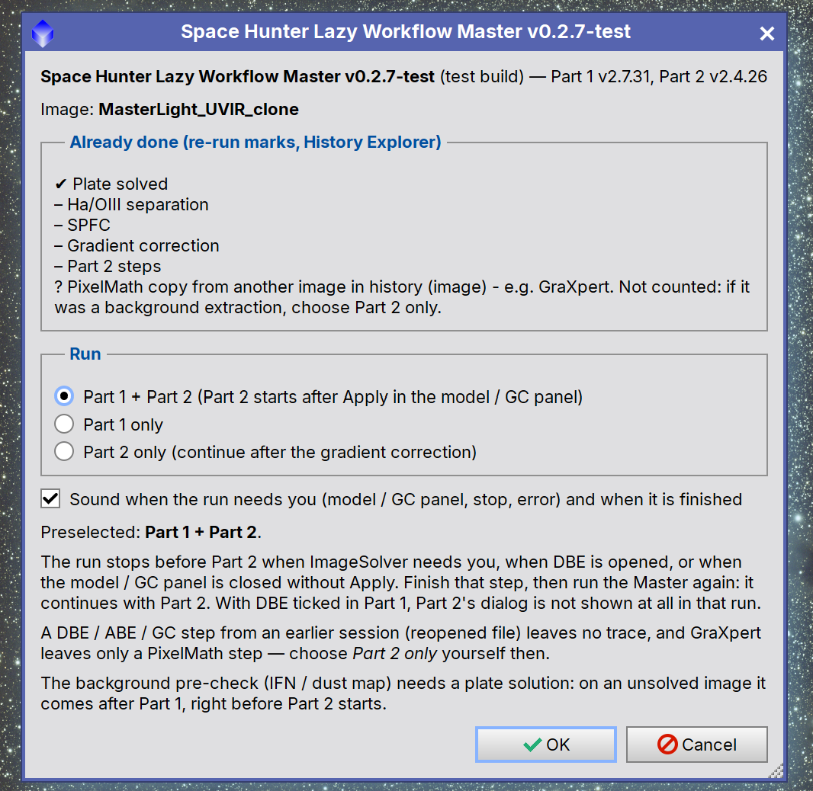

Runs SH Lazy Workflow Part 1 and Part 2 as one workflow: Part 2 starts by itself as soon as you apply a background model or GC result in Part 1. [more]
Keywords: Space Hunter, OSC, workflow, Lazy Workflow, MGC, GradientCorrection, background model, SPFC, SPCC, BlurXTerminator
[hide]
[hide]
The Master runs the two parts of the Space Hunter Lazy Workflow, Part 1 and Part 2, as one workflow. You set up both parts at the start; after that the run only needs you once, to choose the background model (or GC result) in Part 1's panel. As soon as you click Apply there, Part 2 continues without being started by hand.
The Master contains both parts unchanged. Every step works and is set up exactly as described in their manuals. This manual only covers what the Master adds: the start dialog, and when a run stops and how it continues.
Master sequence: start dialog → Part 1 dialog → Part 2 dialog → Part 1 (plate solve, SPFC, previews, MGC / GC) → your choice in the model / GC panel → Part 2 (BXT correct, background, SPCC, stretch, BXT full, and the optional steps).
[hide]

The start dialog shows the active image and what has already been done to it, and lets you choose what to run.
Already done
Read from the image before anything runs: plate solution, Ha/OIII separation, SPFC, gradient correction and Part 2's steps. A step counts only while it is still active in the History Explorer (see What counts as done).
Part 1 + Part 2
The whole workflow. Preselected when no gradient correction was found.
Part 1 only
Part 1 as the single script would run it.
Part 2 only
Continue after the gradient correction. Preselected when a gradient correction or a Part 2 step was found.
After OK, Part 1's dialog opens, then Part 2's (for Part 1 + Part 2). Both are the dialogs of the single scripts. Part 2's camera, filter set and white reference start with what you chose for SPFC in Part 1, if Part 2's list has the same entry; check them before you click OK. Cancel in any dialog ends the Master without changing the image.
A process icon made with New Instance in Part 2's dialog holds the settings of both parts. Double-click it to start the Master with them.
With Part 1 + Part 2, everything is set up first, then the image is processed:
If MGC fails (for example where the MARS database has no data), Part 1 falls back to GradientCorrection as usual, and the Master waits for Apply in the GC result panel instead.
The Master stops before Part 2, with a message in the console, when:
In each case the next run sees what was done and preselects Part 2 only, so it continues where it stopped. A DBE, MGC, GC or ABE step that is active in the History Explorer counts, as does Part 1's own mark.
If you choose Part 1 + Part 2 on an image that already has a gradient correction, Part 1 and the Master warn you first. No is the default: a second gradient correction may damage the image.
[hide]
The same as for Part 1 and Part 2 together: see Requirements in the Part 1 and Part 2 manuals. The Master has no requirements of its own.
Everything Part 1 and Part 2 store, write or download is listed in Files, Programs and Internet Access in their manuals, and applies unchanged when they run inside the Master. The Master adds only this:
The Master is released under the MIT License, Copyright © 2026 Georg G. Albrecht, like Part 1 and Part 2. It contains Part 2, and with it the AutoColor code (© 2016 Hartmut V. Bornemann, used with written permission), which must be kept in its original form and needs a separate written agreement with its author. See the LICENSE on GitHub.
2026 Georg G. Albrecht. MIT License. AutoColor.js © 2016 Hartmut V. Bornemann, used with written permission.